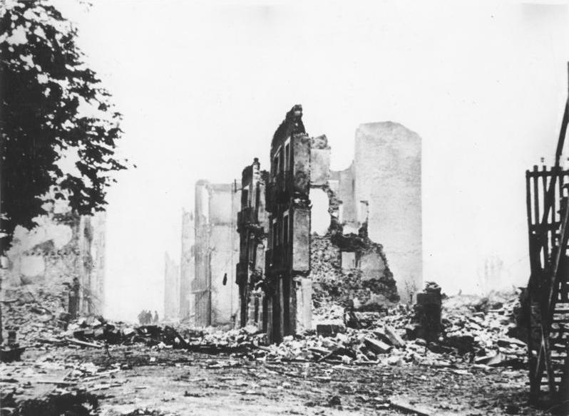

La aviación arrasa Gernika en una tarde de mercado
Aparatos alemanes e italianos bombardearon durante más de tres horas la villa foral, sin objetivo militar a la vista, y ametrallaron a quienes huían por los campos. El número de muertos se ignora esta noche. El árbol de los Fueros sigue en pie entre las ruinas.

Era lunes de mercado en Gernika y los caseríos de la comarca habían bajado a la villa. A las cuatro y media de la tarde tocaron a rebato las campanas: un avión asomó sobre el valle, dejó caer su carga y se fue. Detrás llegaron las oleadas, una tras otra, durante más de tres horas: bombas explosivas primero, incendiarias después, y aparatos de caza volando bajo para ametrallar a quienes huían por los campos y las carreteras. Al anochecer, la villa foral de los vascos era una sola hoguera visible desde los montes, y por el camino de Bilbao empezaban a llegar los primeros fugitivos, negros de humo, sin palabras.
Los testimonios coinciden en lo esencial: los aparatos eran alemanes de la Legión Cóndor, acompañados de aviación legionaria italiana, y actuaron con método, por turnos, como quien ejecuta un plan de destrucción y no una operación de guerra. En Gernika no había esta tarde objetivo militar a la vista: ni tropas concentradas, ni fábricas de armas en el casco, ni frente inmediato. Había un mercado, mujeres, ancianos y refugiados llegados de otros pueblos. Las bombas incendiarias, de las que se han recogido restos a centenares, prendieron el caserío antiguo calle por calle, y quienes salían de los refugios entre oleada y oleada eran perseguidos a tiro de ametralladora.
El bombardeo se inscribe en la ofensiva que las fuerzas del general Mola sostienen desde hace semanas contra Vizcaya. Durango fue bombardeada a fines de marzo con decenas de muertos, y desde entonces los pueblos del interior viven mirando al cielo. Pero Gernika no es un pueblo cualquiera: bajo su roble juraban los señores respetar las libertades vascas, y su Casa de Juntas guarda la memoria foral del país. Esta noche, cuentan los que han vuelto, el árbol sigue en pie junto a la Casa de Juntas, intacta entre las ruinas, como si el fuego hubiera querido dejar un testigo de lo que ardió alrededor.
Periodistas extranjeros que se encontraban en Bilbao salieron hacia la villa en cuanto se supo la noticia y regresaron de madrugada con los rostros descompuestos. El corresponsal inglés George Steer recogió entre los escombros tubos de bomba incendiaria con marcas de fábrica alemanas, que muestra a quien quiera verlos. Los supervivientes refieren escenas que esta redacción prefiere consignar con sobriedad: familias enteras bajo los refugios hundidos, animales ardiendo en el ferial, heridos caminando horas hacia Bilbao. Nadie puede dar esta noche una cifra de muertos: se habla de cientos, y habrá que esperar a que los escombros se enfríen para contar lo que quede por contar.
Este diario mide sus adjetivos porque la guerra los ha gastado casi todos. Pero lo de hoy exige dejar constancia: una villa abierta, sin defensa antiaérea y sin objetivo militar, ha sido incendiada desde el aire hasta los cimientos, y su vecindario ametrallado en los campos. Si esta forma de guerra se consolida, ninguna población de la retaguardia podrá sentirse a salvo, y la palabra frente perderá su sentido. Gernika era para los vascos el símbolo de sus libertades; sus cenizas humean esta noche sobre algo más que un caserío. Consignamos los hechos y esperamos las cifras: el juicio, tememos, habrá de darlo la historia.